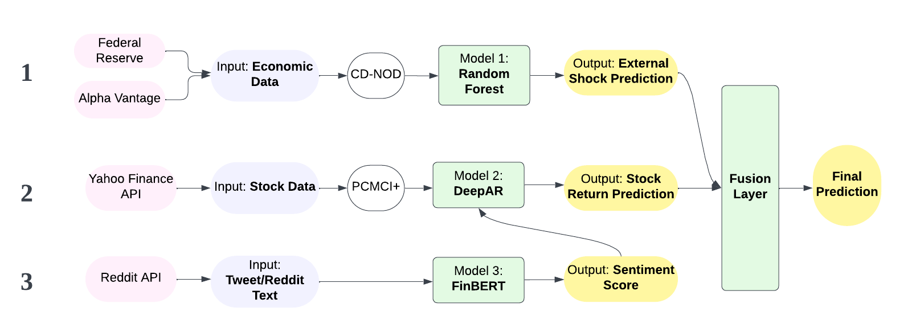

content here...
FinBERT - Specialized NLP model for financial text sentiment analysis.
Weighted FinBERT confidence levels with normalization to 0-1 range.
Work Flow of Sentiment Analysis Module
To fully capture the economic impact on stock returns, we gathered data from two different sources
The key challenge arises from the inherent discrepancy in temporal granularity:macroeconomic and microeconomic indicators are typically reported on a monthly basis, while corporate financial statements adhere to a quarterly reporting cycle. To align these datasets, we mapped quarterly stock returns from daily price data and decomposed macroeconomic indicators into three monthly observations per quarter. Using OLS regression, we identified the most statistically relevant monthly indicator for each quarter. Finally, we merged company financial data with the selected macroeconomic features, ensuring temporal consistency for predictive modeling.
Our stock prediction system is designed to model uncertainty in the market. Unlike traditional models that only provide a single prediction, we generate a range of possible outcomes with their probabilities - similar to how experienced investors think about market risks.
We collect historical data of 6 companies (3 Tech, 3 Healthcare) via Yahoo Finance API from Jun 2020 to Feb 2025, including daily metrics of opening/closing price, high, low, and volume. Our dataset contains 1,190 trading days per company, totaling 7,140 records, capturing both stable and volatile market periods. We calculate Daily return as:
Applied PCMCI+ algorithm for causal feature selection, identifying 8 key covariates based on their causal impacts. This advanced technique helps us distinguish true causal relationships from mere correlations, focusing on factors that actually drive stock returns:
The causal structure above shows which factors truly influence stock returns, with stronger connections indicating stronger causal effects
Our model is based on the DeepAR (Deep Auto-Regressive) architecture, which combines deep learning with probabilistic forecasting. This approach is particularly well-suited for financial time series where uncertainty quantification is crucial.
The model integrates historical returns, technical indicators, and entity embeddings into a concatenated input tensor. An enhanced LSTM with skip connections and variational dropout enables robust gradient flow. The probabilistic output layer generates a Gaussian distribution of future returns, instead of just point estimates.
Key improvements in our architecture include:
The model processes historical data through specialized layers to produce probability distributions of future returns
To address the limitations of pure time series models and incorporate broader market context, we develop a fusion layer that combines DeepAR predictions with financial and macroeconomic indicators. This approach allows us to refine the primary model's predictions by accounting for fundamental factors that affect stock price movements but may not be fully captured in the historical price patterns alone.
Our fusion layer integrates two complementary data sources:
By combining high-frequency market data with lower-frequency fundamental indicators, we create a more comprehensive view of stock behavior than either approach alone could provide.
The fusion layer analyzes multiple dimensions of market behavior:
Rather than simply replacing our DeepAR predictions, the fusion layer implements a dynamic blending approach that adjusts based on market conditions:
This adaptive strategy recognizes that deep learning models (DeepAR) often perform better during volatile periods, while ensemble methods excel in more stable markets.